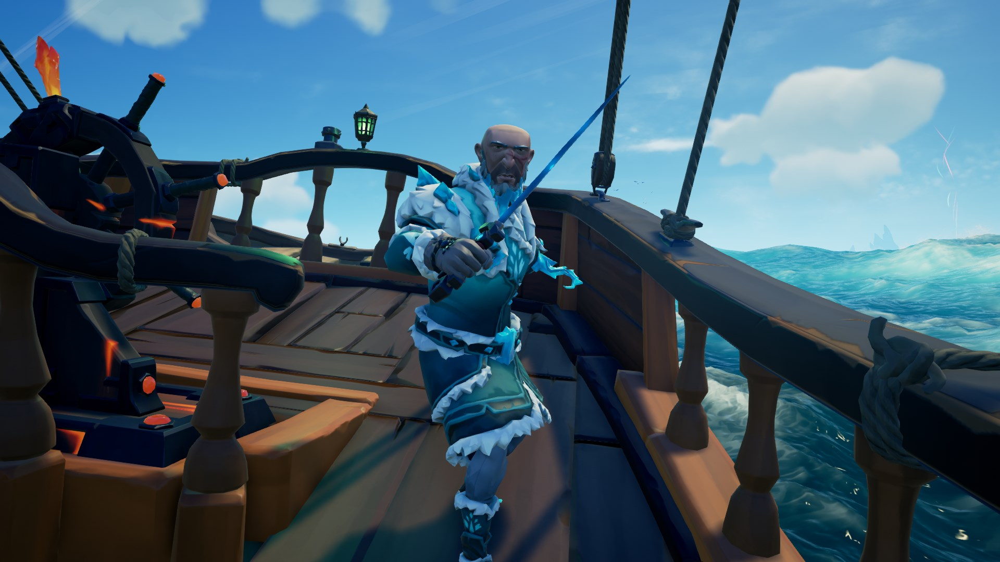
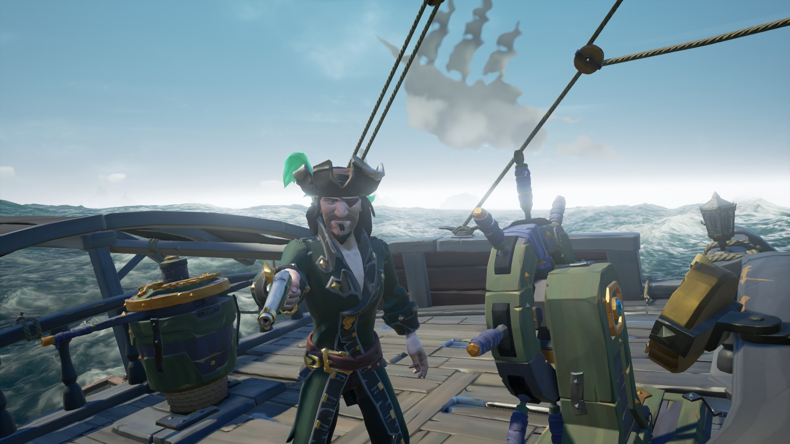
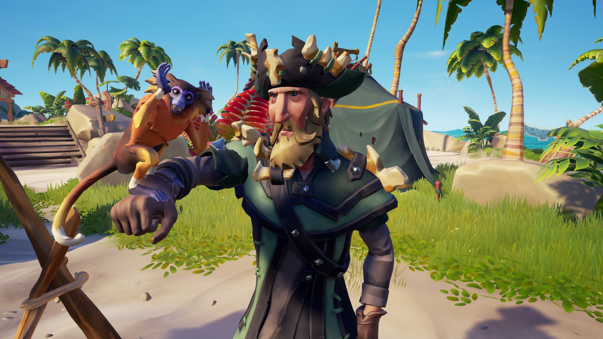
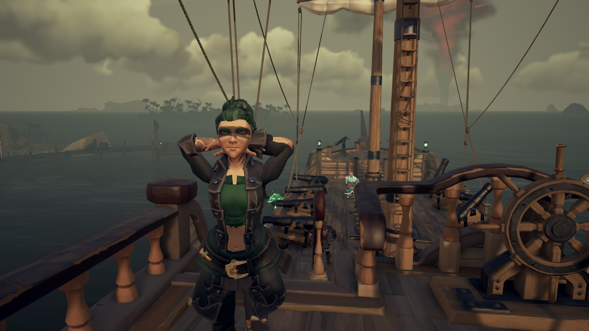
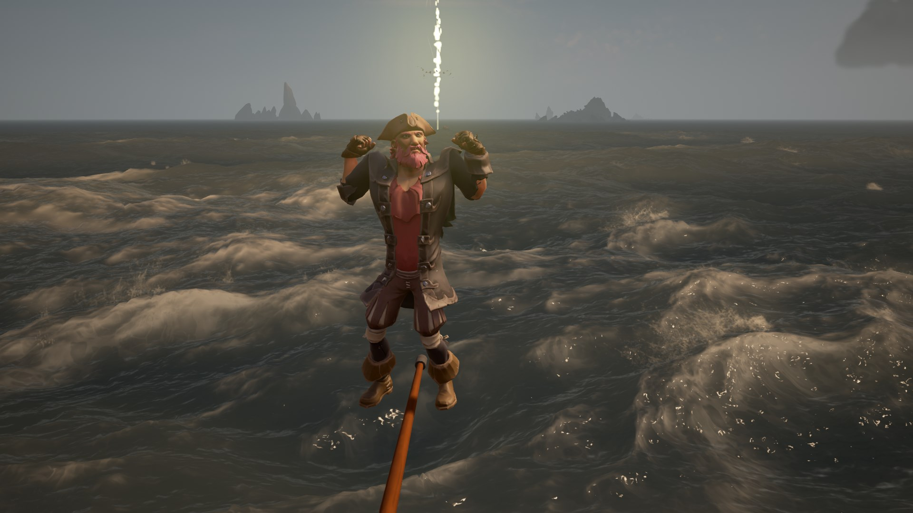

Les compagnonsd 'Heramy
Voici une liste non-exhaustive des pirates et marins qui ont accompagné Heramy au cours de ses voyages, triés par ordre d'arrivée à bord.
Trenfall from France
Le premier marin à rejoindre Heramy, il fut le plus dévoué et le plus motivé dans sa période de gloire, on raconte que lui et Heramy voyagèrent nuit et jour sans relâche et parfois sans dormir pour devenir des Pirates Légendaires ! Il a désormais pris sa retraite et ne part en mer que lorsqu'un butin certain lui est promis.
Bleux le Rougex
Un matelot... Motivé. Parfois. Rien n'est plus incertain que ses intentions, la mutinerie coule dans ses veines, et il a probablement brûlé plus souvent son propre navire qu'un navire ennemi. Il est malgré tout un très bon camarade de combat et d 'aventure. (Note: ne pas le laisser à la cuisine)
Aksolee le mis à jour
Ce pirate adore être à jour sur ce qu'il se passe, à tel point qu'il passe son temps à terre, pour se maintenir à jour, probablement à écouter ce qui se dit dans les tavernes, il raffole d 'anecdotes.
SecretNephalem aka BabyLatios
Cette pirate n'aillant peur de rien voyage très souvent aux côtés d'Heramy. De la chasse au mégalodon, à la découverte de caches aux trésors, elle relève toutes les missions les plus périlleuses proposées par les compagnies.
Proustibat, qui peut le battre?
Dernier en date à avoir rejoint les rangs d'Heramy, il n'en est pas moins efficace et motivé. Il raconte souvent des histoires du passé auquel il tient tant, à bord du Karrek-Ven. Il détient aujourd'hui encore le record de saut en longueur depuis la proue d'un navire.